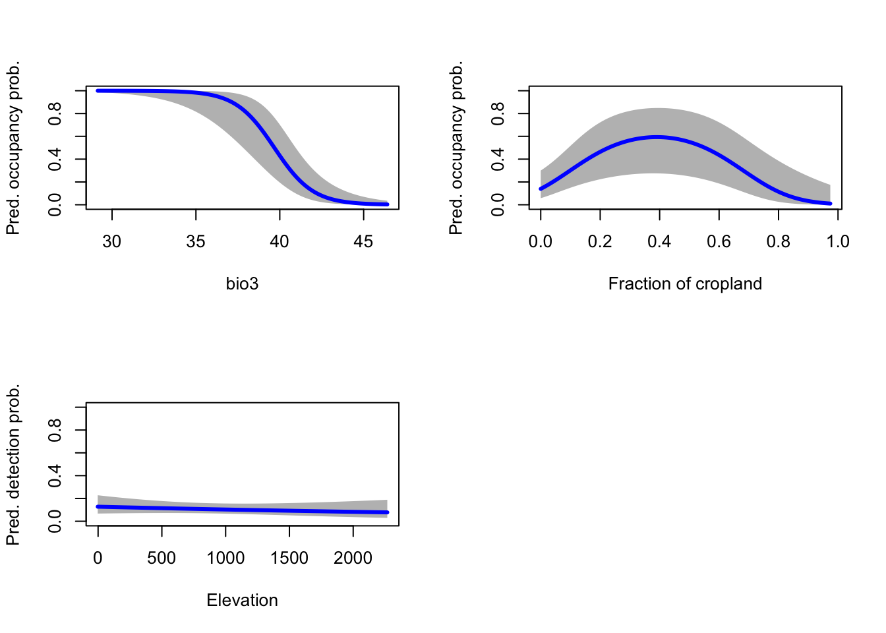
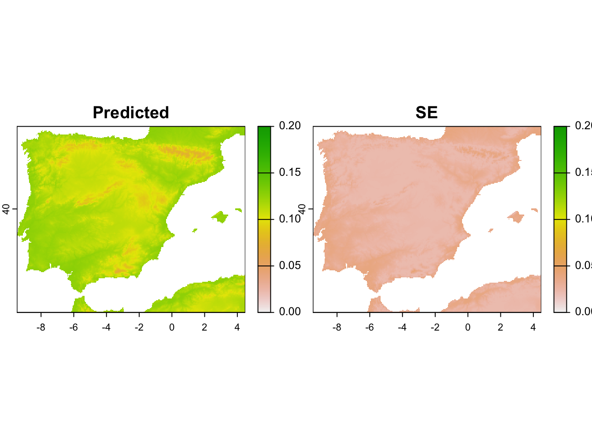

RStudio project
Open the RStudio project that we created in the previous session. I recommend to use this RStudio project for the entire module and within the RStudio project create separate R scripts for each session.
# Session Occ-5: Occupancy models - evaluation & prediction
and save the file in your folder “scripts” within your project folder,
e.g. as “Occ5_EvalPred.R”In this practical, we will learn how to validate occupancy models and how to make predictions. During validation, we are of course interested in how far our model fits the data but also whether the model is plausible and makes adequate predictions to new times and places. These aspects should be prerequisite for making predictions in space and in time.
In the previous practical, we used red kite detection/non-detection data from eBird to model occupancy in Spain. Remember that our data processing steps for the eBird were overly simplified and do not correspond to best practices. The eBird best practices and more elaborate workflows are described here: https://cornelllabofornithology.github.io/ebird-best-practices. As indicated earlier, the main purpose of the present practicals is to exemplify the workflow and basic functionality of occupancy models using freely available data.
Thus, we will again use the Spanish red kite example, estimate our occupancy model in order to identify the main environmental determinants of red kite distribution, assess plausibility and model accuracy, and map our predictions.
We start by reading in the data and standardising. In contrast to the
previous practical, we will not “blindly” use the function
scale() for standardising but we first explicitly calculate
the mean and standard deviations of the covariates and store them for
later. This will become important when making predictions to new
data.
library(unmarked)
# Load species data:
load('data/redkite_env_thinned.RData')
# Estimate the covariate means and sd
cov_means <- colMeans(redkite_env_thinned[,-c(1:7)])
cov_sd <- apply(redkite_env_thinned[,-c(1:7)],2,sd)
# Standardise using the covariate means and sd
redkite_env_scaled <- redkite_env_thinned
redkite_env_scaled[,-c(1:7)] <- scale(redkite_env_scaled[,-c(1:7)], center=cov_means, scale=cov_sd)
# Create unmarked object containing the detection and non-detection data and the covariate data:
occ_env_redkite <- unmarkedFrameOccu(y = redkite_env_scaled[,4:6], siteCovs = redkite_env_scaled[,-c(1:7)])We fit a comparably simple model with only two weakly correlated covariates explaining occupancy and one covariate explaining detection. We have already identified a set of weakly correlated variables in Practical Occ-4 and we have also learned how to use AIC-based model selection to identify a good set of candidate models. The model below has a \(\Delta AIC\) of 2.22 behind the best model of all potential combinations of the first four weakly correlated variables identified in the previous practical. I chose it for its simple shape.
# Fit occupancy-detection model
(m_occdet <- occu(~ ESP_elv ~ bio_3 + cropland + I(cropland^2), occ_env_redkite))##
## Call:
## occu(formula = ~ESP_elv ~ bio_3 + cropland + I(cropland^2), data = occ_env_redkite)
##
## Occupancy:
## Estimate SE z P(>|z|)
## (Intercept) 0.0844 0.610 0.138 0.890032
## bio_3 -2.1453 0.508 -4.224 0.000024
## cropland 1.1833 0.449 2.637 0.008371
## I(cropland^2) -1.1912 0.406 -2.936 0.003320
##
## Detection:
## Estimate SE z P(>|z|)
## (Intercept) -2.081 0.243 -8.547 1.26e-17
## ESP_elv -0.102 0.135 -0.756 4.50e-01
##
## AIC: 591.6341Even if we have selected a best model based on AIC or another information theoretic approach, we still need to ascertain our level of confidence in the model, which is typically done by assessing model fit (or lack thereof) (MacKenzie and Bailey 2004).
In model assessment, we aim to assess how well the model is fitting the data, meaning how well it is calibrated. we have already seen the Nagelkerke \(R_{N}^{2}\) as part of the summary statistics output from the AIC-based model selection. We can quickly repeat it here as it only needs the comparison to a null model.
modSel(fitList(
"our model"= m_occdet,
"null" = occu(~ 1 ~ 1, occ_env_redkite)), nullmod="null")## nPars AIC delta AICwt cumltvWt Rsq
## our model 6 591.63 0.00 1.0e+00 1.00 0.16
## null 2 652.98 61.34 4.8e-14 1.00 0.00As indicated earlier, \(R^2\) values in logistic regression are rather low and so are pseudo-\(R^2\) values such as Nagelkerke \(R_{N}^{2}\) (Hosmer and Lemeshow 2013). An \(R_{N}^{2}\) of \(0\) would indicate that the model predictions represent those of the null model, while values of 0-0.1 indicate a poor improvement in model fit, 0.1-0.3 modest model fit, 0.3-0.5 moderate model fit, and values above 0.5 a strong model fit (Muijs 2010). Thus, our \(R_{N}^{2}\) of 0.16 indicates a modest model fit.
Goodness-of-fit (GoF) methods are useful to test how well the model fits the data. When data contain false negatives due to imperfect detection, then the true state process (the occupancy) is hidden (Guillera-Arroita 2017). Thus, when assessing how well the model fits the data in case of occupancy-detection models, we need to keep in mind that our observations are a combined effect of occupancy and detectability (Guillera-Arroita 2017).
Here, we are going to use the goodness-fit-test by MacKenzie and Bailey (2004), implemented in the
mb.gof.test() function in the package
AICcmodavg (Mazerolle 2023).
This approach calculates a Pearson’s chi-square fit statistic from the
observed and expected frequencies of detection histories for a given
model. However, as the expected frequencies tend to be small, not all
assumptions of the chi-square statistic are met and it is recommended to
use parametric bootstrapping to obtain p-values and determine
whether there is an unusually large discrepancy between observed and
expected values. This bootstrap procedure is described in detail in
(MacKenzie and Bailey 2004, 306).
The function mb.chisq() computes the observed and
expected frequencies for the detection histories contained in the
data.
library(AICcmodavg)
# compute observed and expected frequencies of detection histories
mb.chisq(m_occdet)##
## MacKenzie and Bailey goodness-of-fit for single-season occupancy model
##
## Pearson chi-square table:
##
## Cohort Observed Expected Chi-square
## 000 0 580 584.21 0.03
## 001 0 25 20.33 1.07
## 010 0 24 20.33 0.66
## 100 0 21 20.33 0.02
## 101 0 2 2.50 0.10
## 111 0 1 0.31 1.53
##
## Chi-square statistic = 8.4184The function mb.gof.test() performs the bootstrapped
test. Typically, it is recommended to simulate at least 1000 bootstrap
samples, but this can take quite long. Thus, for illustrative purposes
you may want to reduce the number of bootstrap samples (set using by
argument nsim). The p-value indicates the
probability of the null hypothesis that there is no lack of fit and thus
no major differences between expected and observed frequencies. Hence,
\(p≤0.05\) indicates a lack-of-fit of
the model.
# perform bootstrapped GoF-test
(gof.results <- mb.gof.test(m_occdet, nsim=1000))##
## MacKenzie and Bailey goodness-of-fit for single-season occupancy model
##
## Pearson chi-square table:
##
## Cohort Observed Expected Chi-square
## 000 0 580 584.03 0.03
## 001 0 25 20.44 1.02
## 010 0 24 20.44 0.62
## 100 0 21 20.44 0.02
## 101 0 2 2.45 0.08
## 111 0 1 0.30 1.64
##
## Chi-square statistic = 8.3021
## Number of bootstrap samples = 1000
## P-value = 0.147
##
## Quantiles of bootstrapped statistics:
## 0% 25% 50% 75% 100%
## 0.28 3.17 4.74 6.95 31.77
##
## Estimate of c-hat = 1.54In our example, observed frequencies of detection histories and expected frequencies correspond reasonably well and there is no reason to suspect a lack of fit. We thus have good confidence in our model.
We also obtain the overdispersion parameter \(\hat{c}\) (c-hat) that indicates whether the field data are more (or less) variable than we expect from our global model. Here, it is calculated by dividing the observed chi-square statistic by the average of the test statistics obtained from the parametric bootstrap (MacKenzie and Bailey 2004). Ideally, \(\hat{c}\) should be close to 1. Values lower than 1 indicate underdispersion, meaning lower variation than expected, and values larger than 1 indicate overdispersion. \(\hat{c}\) values of 2-4 may indicate lack of independence of observations, and values above 4 indicate severe lack of fit. In cases of moderate overdispersion, \(\hat{c}\) can be used as variance inflation factor to correct the AIC values and prediction variances or standard errors.
Having ascertained a reasonable model fit, we will now inspect the fitted occupancy-environment relationships and the fitted detection-environment relationship. For this, we will draw partial response plots that depict how the modelled response varies across one environmental gradient while keeping all other environmental variables constant at their mean. To do so, we create dummy data that contain the covariate gradients and then make predictions to these dummy data.
# Create covariate gradients (at original scale):
grad.bio3 <- seq(min(redkite_env_thinned$bio_3), max(redkite_env_thinned$bio_3), length=100)
grad.cropland <- seq(min(redkite_env_thinned$cropland), max(redkite_env_thinned$cropland), length=100)
grad.elev <- seq(min(redkite_env_thinned$ESP_elv), max(redkite_env_thinned$ESP_elv), length=100)
# Standardise them using the stored means and sd of our data
grad.bio3.scaled <- scale(grad.bio3, center=cov_means['bio_3'], scale=cov_sd['bio_3'])
grad.cropland.scaled <- scale(grad.cropland, center=cov_means['cropland'], scale=cov_sd['cropland'])
grad.elev.scaled <- scale(grad.elev, center=cov_means['ESP_elv'], scale=cov_sd['ESP_elv'])
# Make occupancy prediction - predictions are done separately for each gradient, while the other covariate is kept constant at their mean (mean=0 as the covariates were standardised)
dummyData <- data.frame(bio_3=grad.bio3.scaled, cropland=0)
pred.occ.bio3 <- predict(m_occdet, type="state", newdata=dummyData, appendData=TRUE)
dummyData <- data.frame(bio_3=0, cropland=grad.cropland.scaled)
pred.occ.cropland <- predict(m_occdet, type="state", newdata=dummyData, appendData=TRUE)
# Make detectability prediction - here, we only have one gradient in our example
dummyData <- data.frame(ESP_elv=grad.elev.scaled)
pred.det.elev <- predict(m_occdet, type="det", newdata=dummyData, appendData=TRUE)The prediction output contains the predictions, the standard error (SE) and the lower and upper bounds of the 95% confidence interval. We now plot the predictions and the confidence intervals.
# partition the graphics device into 2x2 panels (switch back to 1-panel window with par(mfrow = c(1,1)) )
par(mfrow = c(2,2))
# plot the response curves for occupancy probability along bio3 gradient:
plot(pred.occ.bio3[[1]] ~ grad.bio3, type = "n", ylim = c(0,1), ylab = "Pred. occupancy prob.", xlab = "bio3")
polygon(c(grad.bio3,rev(grad.bio3)), c(pred.occ.bio3[,3],rev(pred.occ.bio3[,4])), col='grey', border=NA)
lines(pred.occ.bio3[[1]] ~ grad.bio3, lwd=3, col='blue')
# plot the response curves for occupancy probability along cropland gradient:
plot(pred.occ.cropland[[1]] ~ grad.cropland, type = "n", ylim = c(0,1), ylab = "Pred. occupancy prob.", xlab = "Fraction of cropland")
polygon(c(grad.cropland,rev(grad.cropland)), c(pred.occ.cropland[,3],rev(pred.occ.cropland[,4])), col='grey', border=NA)
lines(pred.occ.cropland[[1]] ~ grad.cropland, lwd=3, col='blue')
# plot the response curves for detection probability along elevation gradient:
plot(pred.det.elev[[1]] ~ grad.elev, type = "n", ylim = c(0,1), ylab = "Pred. detection prob.", xlab = "Elevation")
polygon(c(grad.elev,rev(grad.elev)), c(pred.det.elev[,3],rev(pred.det.elev[,4])), col='grey', border=NA)
lines(pred.det.elev[[1]] ~ grad.elev, lwd=3, col='blue')
We can interpret that occupancy probability of red kite decreases with isothermality (bio3), meaning when diurnal (day-to-night) temperature differences become closer to annual (summer-to-winter) temperature differences. Thus, red kites prefer areas where the temperature variability within a month is considerably smaller than compared to the annual variability. Further, occupancy probability of red kite is highest for intermediate proportions of cropland. Finally, detection probability decreases with elevation, although this relationship does not seem very pronounced. Overall, our modelled responses appear very plausible.
Strictly, as our \(\hat{c}\) value from the GoF test was above 1, we would use this to inflate the standard errors around our predictions. The confidence bands would then become wider.
We have already learned how to use the predict()
function in the previous step. To map predictions in space, we need the
geographic layers of the environmental variables. But we have to take
care to standardise these in the same way as our training data before
calling them in the predict() function.
If you closely followed Practical 3, then you should have all the environmental raster layers at 5 km spatial resolution stored in your data folder. (If not, download from moodle.)
# Read environmental layers:
library(terra)## terra 1.7.46clim_5km <- terra::rast('data/bioclim_ESP_5km.tif')
crop_5km <- terra::rast('data/crops_ESP_5km.tif')
elev_5km <- terra::rast('data/elev_Esp_5km.tif')The predict() function expects a data frame. We thus
combine all environmental information in a data frame and then
standardise the data using the scaling coefficients that we have
previously estimated from our training data.
# Create data frame with environmental data and coordinates (exclude non-terrestrial cells with NAs):
env_dat <- na.exclude(
as.data.frame(c(clim_5km,elev_5km,crop_5km), xy=T)
)
# Standardise data (using the previous scaling coefficients!!):
env_dat_scaled <- env_dat
env_dat_scaled <- data.frame(scale(env_dat_scaled[,-c(1:2)], center=cov_means[names(env_dat_scaled[,-c(1:2)])], scale=cov_sd[names(env_dat_scaled[,-c(1:2)])]))We make predictions to the new data sets and append these to our coordinate information. This is important to be able to create raster maps again.
# Make occupancy predictions and append to x/y coordinates of environmental data frame:
pred_occ <- cbind(env_dat[,1:2],predict(m_occdet, newdata=env_dat_scaled, type="state"))
# Make detectability predictions and append to x/y coordinates of environmental data frame:
pred_det <- cbind(env_dat[,1:2],predict(m_occdet, newdata=env_dat_scaled, type="det"))We use terra::rast() to create the
SpatRaster objects. For this, we just have to provide the
coordinate information and any columns that we want as raster
information.
# Make multi-layer SpatRaster from prediction data frame:
pred_occ_r <- terra::rast(pred_occ[,c('x','y','Predicted','SE')], type='xyz', crs=crs(clim_5km))
pred_det_r <- terra::rast(pred_det[,c('x','y','Predicted','SE')], type='xyz', crs=crs(clim_5km))For mapping, we can use the generic function plot().
# Map predicted occupancy along with its standard error
terra::plot(pred_occ_r, range=c(0,1))# Map predicted detectability along with its standard error
terra::plot(pred_det_r, range=c(0,0.2))
Don’t forget to save your workspace!
save.image('data/Occ5_EvalPred.RData')Exercise:
gof.results$c.hat.est. Interpret the response curves.